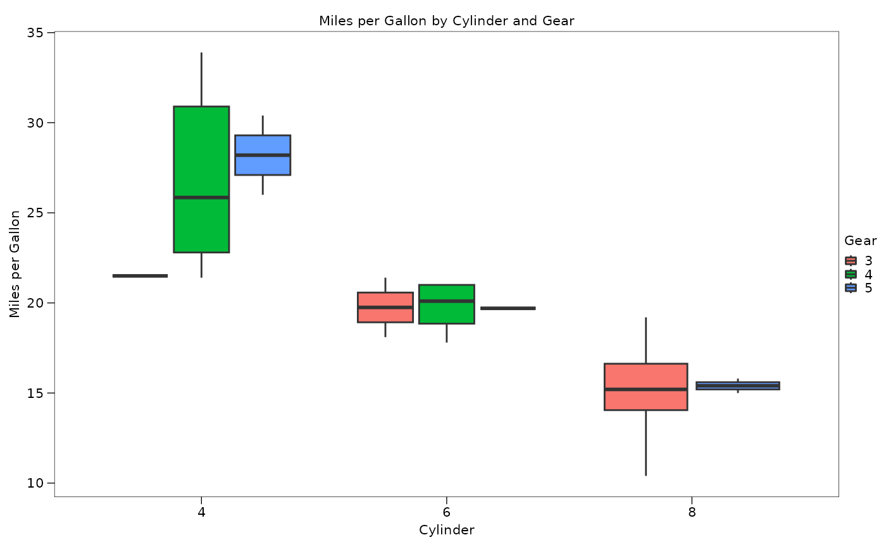
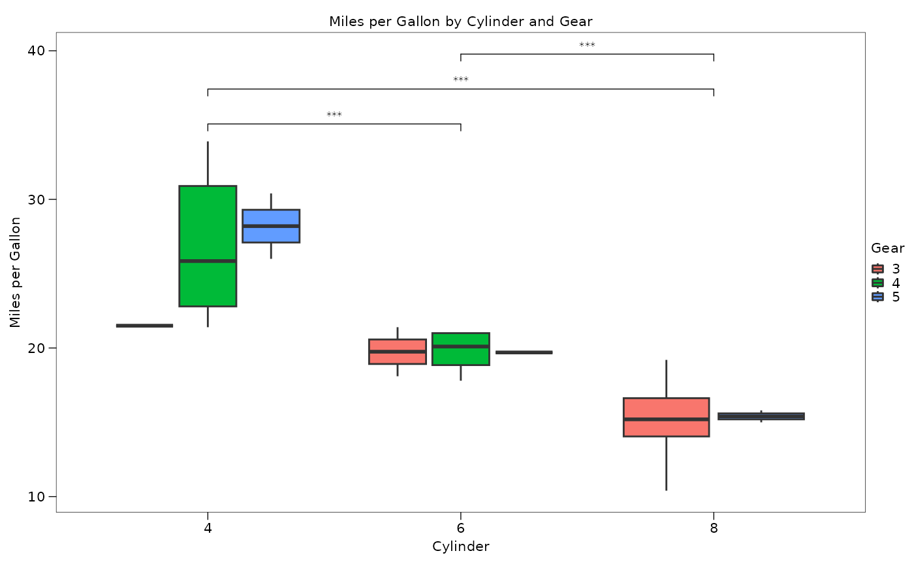
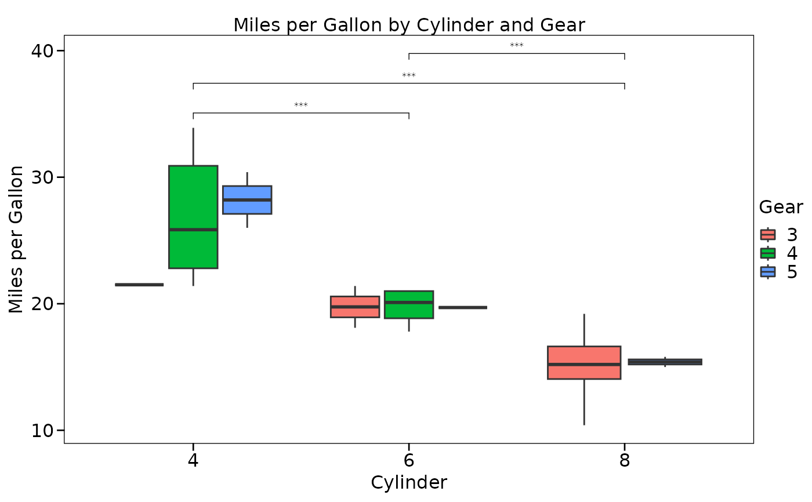

Modify a ggplot2 plot with custom theme, title, axis labels, and ggsignif comparisons
Source:R/cat_modify_plot.R
cat_modify_plot.RdThis function modifies a ggplot2 plot by adding a custom theme, plot title, axis labels, and ggsignif comparisons. The function returns a list of ggplot2 objects that can be used to modify the plot.
Usage
cat_modify_plot(
plot_title = waiver(),
x_axis_title = waiver(),
y_axis_title = waiver(),
x_text_angle = NULL,
y_text_angle = NULL,
legend_title = waiver(),
font_size = 8,
linewidth = 0.5,
aspect_ratio = NULL,
frame = "closed",
show_panel_grid = "both_not",
show_title = "both",
show_text = "both",
text_italic = "both_not",
show_ticks = "both",
ticks_length = 4,
legend_position = "right",
legend_direction = NULL,
comparisons = NULL,
test = "wilcox.test",
step_increase = 0.1,
map_signif_level = TRUE
)Arguments
- plot_title
A character string representing the title of the plot
- x_axis_title
A character string representing the title of the x-axis
- y_axis_title
A character string representing the title of the y-axis
- x_text_angle
An integer representing the angle of the x-axis text labels
- y_text_angle
An integer representing the angle of the y-axis text labels
- legend_title
A character string representing the title of the plot legend
- font_size
Numeric, font size (default: 8)
- linewidth
Numeric, line width (default: 0.5)
- aspect_ratio
Numeric, aspect ratio of the plot (default: NULL)
- frame
Character, frame type, "closed" or "open" (default: "closed")
- show_panel_grid
Character, panel grid visibility (default: "both_not")
- show_title
Character, axis title visibility (default: "both")
- show_text
Character, axis text visibility (default: "both")
- text_italic
Character, axis text italicization (default: "both_not")
- show_ticks
Character, axis tick visibility (default: "both")
- ticks_length
Numeric, tick length (default: 4)
- legend_position
Character, position of legend (default: "right")
- legend_direction
Character, direction of legend (default: NULL)
- comparisons
A list of comparison groups for ggsignif
- test
A character string representing the statistical test to use for ggsignif
- step_increase
A numeric value representing the step increase for ggsignif
- map_signif_level
A logical value representing whether to map the significance level for ggsignif
Examples
library(ggplot2)
library(catplot)
# Create a plot
data(mtcars)
p <-
ggplot(mtcars, aes(
x = factor(cyl),
y = mpg,
fill = factor(gear)
)) +
geom_boxplot() +
labs(title = "Miles per Gallon by Cylinder and Gear",
x = "Cylinder",
y = "Miles per Gallon",
fill = "Gear")
# Modify the plot with custom theme, title, and axis labels
p + cat_modify_plot(
plot_title = "Miles per Gallon by Cylinder and Gear",
x_axis_title = "Cylinder",
y_axis_title = "Miles per Gallon"
)

# Modify the plot with custom ggsignif comparisons
p + cat_modify_plot(comparisons = list(c("4", "6"), c("4", "8"), c("6", "8")),
test = "t.test")

# Modify the plot with custom theme and ggsignif comparisons
p + cat_modify_plot(
font_size = 12,
linewidth = 1,
comparisons = list(c("4", "6"), c("4", "8"), c("6", "8")),
test = "t.test"
)
